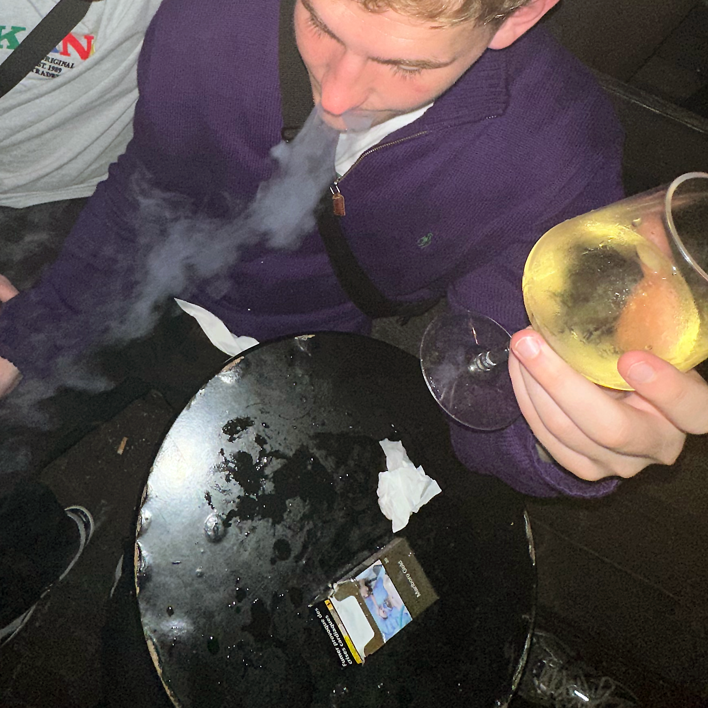
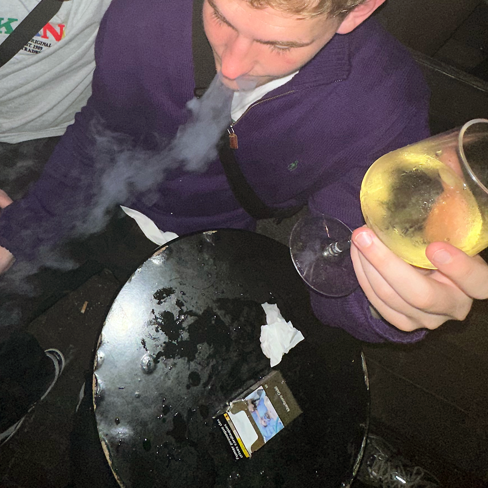

Portfolie
Alt det jeg er stolt af

Store ambitioner
Det er ikke nogen hemmelighed, at jeg elsker at udfordre mig selv og den design norm der er blandt flere websites. I forlængelse af det, så har jeg svært ved at begrænse mig og mine ideer også når der er tidspres. Lever efter at gøre noget 100%, for hvorfor begynde på noget med en 50% indstilling
Kragelund Mose
Projektet har til formål at skabe awarness for Kragelund Mose og udbrede viden omkring naturbevaringsprojekter
Mine roller
Min primære opgave var at sikre en smidig og effektiv projektplanlægning samt at koordinere teamet og fordele arbejdsopgaver. Jeg tog ansvar for at holde projektet på rette spor og sikre, at deadlines blev overholdt via. Trello
Derudover bidrog jeg også med navigation. Jeg skabte skræddersyede ikoner i Adobe Illustrator, der appellerede til at give projektet en unik og genkendelig visuel identitet. Derudover udarbejdede jeg et moodboard og style-tile
Jeg var også involveret i at programmere dele af vores digitale løsning til Kragelund Mose. Jeg arbejdede tæt sammen med gruppen for at sikre, at vores vision blev omsat til en brugervenlig og funktionel digital platform.
Alt i alt var min rolle som en slags projektleder, UI-designer og programmør. Jeg er stolt af det arbejde.
Studieprojektet om Nippon omhandlede brand identitet og markedsføring af koncept og produkt
Mine roller
Min primære ansvarsområde var at håndtere programmeringsaspekterne af projektet, hvilket omfattede udviklingen af software, interaktive elementer og andre tekniske løsninger afhængigt af ideer fra gruppen
Programmeringsarbejdet bestod primært af udvikling af tekniske løsninger og implementering af kode. Derudover bidrog jeg til content creation, hvilket omfattede oprettelse af digitalt indhold som grafik, illustrationer og videoer. Endelig spillede jeg en central rolle i udarbejdelsen af projektets rapport, herunder beskrivelser af arbejdsprocessen, resultaterne og konklusionerne.
Nippon
AROS TikTok-projekt
I forbindelse med et studieprojekt på Erhvervsakademiet, har jeg været involveret i udviklingen af social media content for AROS i Aarhus, hvor vi har skabt short-form videoer. Det var enormt inspirerende og spændende at udarbejde denne type video. Jeg ser frem til at udforske og producere mere indhold af samme karakter på SoMe kanaler. Videoerne til højre er blevet redigeret både gennem TikTok-appen og via CapCut, hvilket har givet mig værdifuld erfaring med begge platforme.
Klik på play-knappen for at se videoerne ⮕
Fotografier
 
